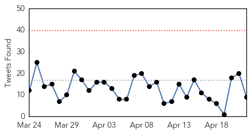

30 Day Trends
Web: 0 alerts, 0 warnings
Twitter: 0 alerts, 0 warnings
Top Articles:
- 1.000
- Senegal confirms first Ebola case as outbreak accelerates
- 1.000
- Preparing Chicago for Ebola
- 0.999
- Big changes needed at WHO before the next Ebola crisis
- 0.999
- Ebola test drug saved monkey lives
- 0.999
- Ebola Treatment Makes Infection Milder in Animal Tests
- 0.999
- Why Sierra Leone can’t get rid of Ebola
- 0.999
- Ebola Treatment Shows Promise in Monkey Study
- 0.999
- Ebola Treatment Shows Promise in Monkey Study
- 0.998
- O'Hare, 4 other airports to do Ebola screenings
- 0.998
- Ebola drug cures monkeys infected with West African virus strain
- 0.997
- Ebola Drug Works Against West African Strain in Study of Monkeys
- 0.997
- After Ebola, Rabies: Sierra Leone Stray Dog Population Up to Half a Million
- 0.996
- Ebola: Guinea to draft medical graduates - Africa
- 0.996
- Guinea finds nine new Ebola cases near border with Sierra Leone
- 0.996
- Scientists to Share Real-time Genetic Data on MERS, Ebola
- 0.996
- Canadian Scientists Claim Successful Ebola Vaccine Trial
- 0.995
- ab 21502489 Latest News ae 21502489
- 0.995
- PLA teams win over hearts
- 0.988
- Rebuilding Liberia As Ebola Cases Decline
- 0.985
- Chief Karwor warns against stigmatization
- 0.981
- World Bank provides new financing for Ebola country
- 0.981
- African Union Commends Latest Financial Support In The Fight Against Ebola Worth 950 Million
- 0.980
- Site Allows Global Access to Real-Time Ebola, MERS Gene Sequences
- 0.978
- Nature News & Comment
- 0.977
- N.Y. Ebola Patient Cost City $4.3M, Ga. Expenses Much Lower
- 0.977
- Ebola Health Team Killers Sentenced
- 0.968
- The Bristol Press: Opinion
- 0.947
- If You’ve Had Ebola, The CDC Wants You To Stop Having Sex
- 0.933
- Genetically modified cows an Ebola cure?
- 0.914
- Sierra Leone News: China prepares to help Salone on post-ebola recovery « Awoko Newspaper
- 0.913
- AU commends latest financial support in fight against Ebola
- 0.889
- Ebola fighter to speak in his native Indianapolis
- 0.886
- Edmond family prepares to run Ebola orphanage in Africa
- 0.865
- Ebola survivors narrate ordeal
- 0.811
- President Koroma Hosts Chinese Special Envoy
- 0.797
- Ebola murders: Eleven jailed for killing health workers who were teaching locals about the disease
- 0.791
- Study examines long-term adverse health effects of Ebola survivors
- 0.780
- Study Examines Long-term Adverse Health Effects of Ebola Survivors
- 0.770
- The Race to Build a Better Suit For Ebola Aid Workers
- 0.759
- LIVELIHOOD SUPPORT TO EBOLA SURVIVORS IN KENEMA
- 0.736
- Ebola Vaccine Passes First Test
- 0.734
- After Ebola, Hunger in Sierra Leone
- 0.718
- Ebola could spread again if we do not invest aid correctly, warns global health expert
- 0.712
- Guinea Ebola health team killers jailed for life
- 0.701
- GeoVax Path Forward Coming Into Focus - GeoVax Labs, Inc. (OTCMKTS:GOVX)
- 0.685
- Study examines long-term adverse health effects of Ebola survivors
- 0.678
- 11 jailed for life for murdering Ebola workers in Guinea
- 0.594
- Cloth masks—dangerous to your health?
- 0.583
- 11 Get Life Sentences Over Guinea Ebola Worker Murder
- 0.583
- Creating Capacity, Building Resilience
Showing top 50 articles...
Top Tweets:
- 0.955
- Ebola Update: 25872 confirmed probable & suspected cases reported in 3 most affected countries with 10721 deaths. EbolaResponse
- 0.826
- Why Sierra Leone can't get rid of Ebola - Quartz http://t.co/g2c1PWU7MW ebola EVD
- 0.795
- RT: WHO: Stall in Ebola decline highlights need for stronger response (also deets on 2 studies: TKM-Ebola & survivors) http://t.c…
- 0.789
- How can we protect groups left vulnerable from the Ebola epidemic?
- 0.687
- Ebola Drug Works Against West African Strain in Study of Monkeys - New York Times http://t.co/08xOXc5B0D ebola EVD
- 0.634
- RT: The number of Ebola cases in West Africa is declining - but there’s still lots more work to gettozero http://t.co/YQXGyjd13n
- 0.623
- An Experimental Ebola Drug Shows More Promise - TIME http://t.co/65VY3dm8uO ebola EVD
- 0.537
- RT: UN’s Dr. David Nabarro: We need GIS mapping data analysis and precision to align response and get to zero Ebola cases. …
- 0.531
- Need to ensure that many children in 3 Ebola affected countries don't die from measles... restart RI https://t.co/epwCHCotw7
Web/News Articles

Tweets
Article Locations